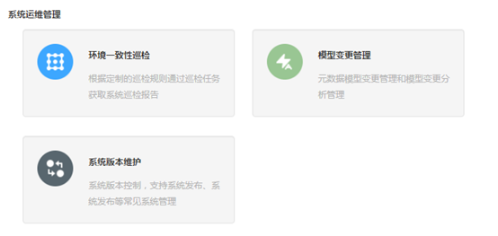
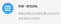
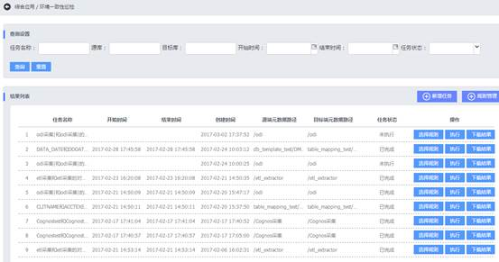

元数据管理系统用户使用手册
元数据管理系统用户使用手册
环境一致性巡检概述：在环境一致性巡检这个模块中，我们可以选择两个元数据进行详细比对，同时，我们可以把比对规则进行设定，从而，比对的时候，就可以按照不同的规则比对。因此，这个模块我们主要可以进行三项操作，即环境一致性巡检查询，新增比对任务，规则管理与执行规则。
环境一致性巡检操作步骤：要想实现环境一致性巡检，需要按照以下环节进行操作：
1. 新增对比任务
2. 设置管理规则
3. 执行管理规则
4. 下载对比结果
环境一致性巡检系统展示：登录à综合应用à环境一致性巡检
1. 登录产品，点击左边的综合应用图标，进入综合应用页面，在综合应用页面有三个模块包括环境一致性巡检模块、模型变更管理模块、系统版本维护模块。

2. 点击环境一致性巡检图标 ，进入环境一致性巡检。

环境一致性巡检功能：操作内容包含如下三部分。
Ø 环境一致性巡检查询
Ø 新增比对任务
Ø 规则管理与执行规则